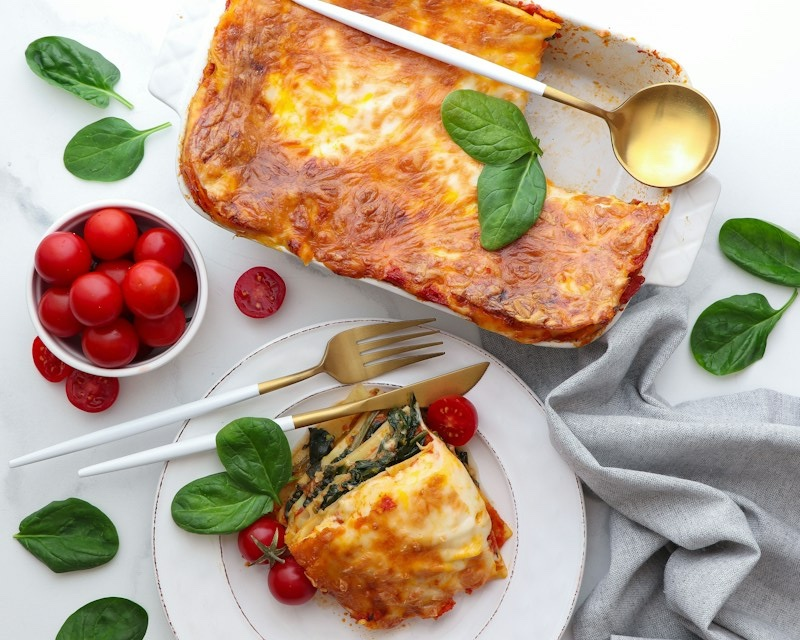
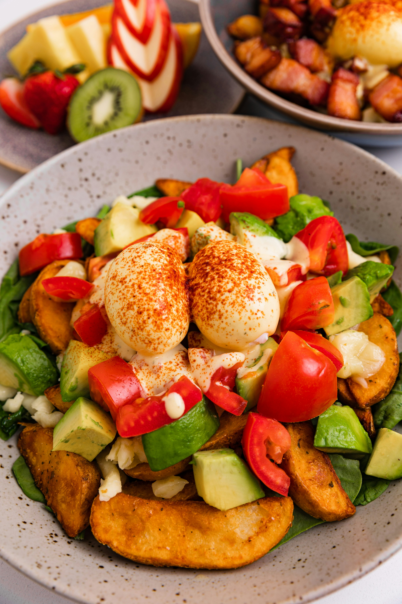

Classic Lasagna
Craving the ultimate comfort? Bake this bubbling, ultra-cheesy lasagna tonight!

Rustic Potato Salad
Dreaming of a cool, creamy classic? Toss this rich, tangy potato salad today!

Old-fashioned Sausage Casserole
Yearning for a warm, comforting classic? Simmer this rich, savory sausage casserole tonight!

Bak Kut Teh
- Rub salt all over bakut then rinse the salt off `
- Put ribs into a pot of water. Bring to a boil. Let boil for 2 to 3 minutes. Drain and 'wash' ribs.
- Put a lot of washed, unpeeled garlic cloves together ith soup packet in pot of water, bring these to a boil
- Add around a teaspoonful of dark soy sauce
- Add clean ribs into boiling soup
- Turn fire down to medium low for 30 mins to 45mins to 1 hour
Rustic Potato Salad
Dreaming of a cool, creamy classic? Toss this rich, tangy potato salad today!
Old-fashioned Sausage Casserole
Yearning for a warm, comforting classic? Simmer this rich, savory sausage casserole tonight!